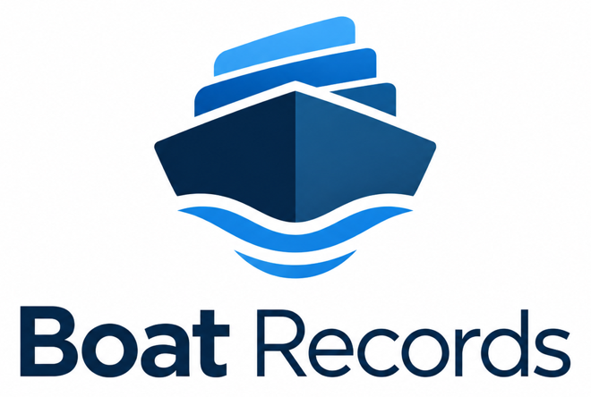

Boat Records Support
Boat Records is a private, local-first iPhone app for keeping boat details, components, maintenance, documents, service history, checklists, search, and owner-ready exports organized on device.
Local Records
Create a boat workspace, then add components, maintenance items, documents, timeline entries, and checklist records from the app's main tabs.
Documents
Imported and scanned documents are stored in the app-owned local vault. Keep your own backups of important records and exported files.
Premium
Boat Records Premium is managed through Apple subscriptions. Purchase, renewal, cancellation, refund, and billing settings are handled by Apple.
Exports
Free exports include records JSON and maintenance CSV. Premium exports include dossier and document package exports when StoreKit reports an active entitlement.
Contact Support
For support, open a public issue at Boat Records Support Issues.
Do not include sensitive personal, payment, or document information in public issues.